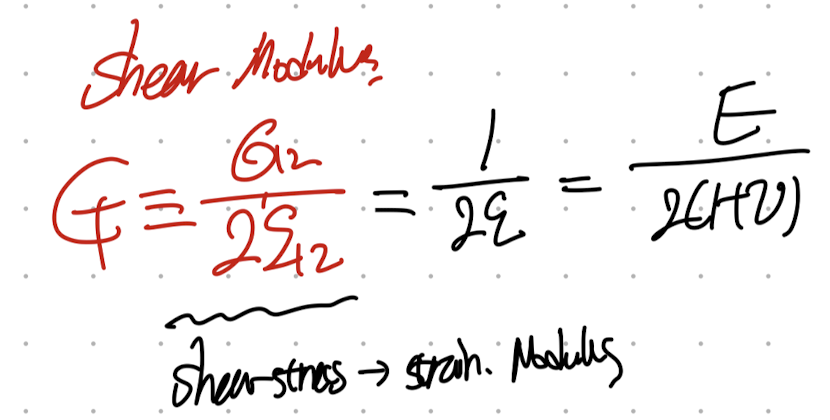
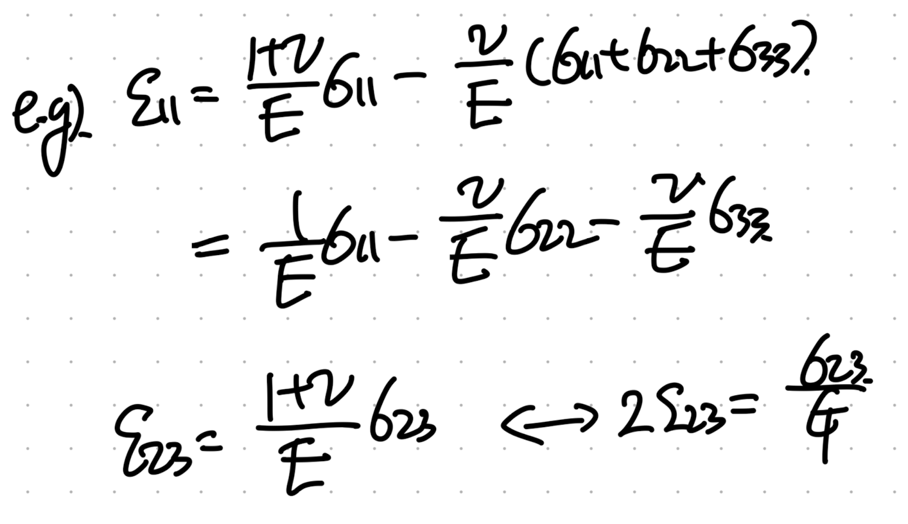
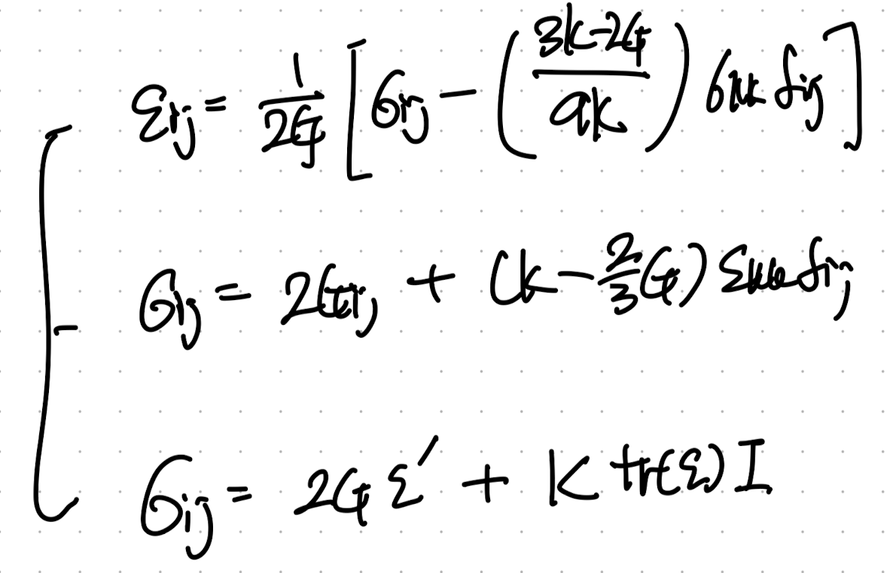

마지막 Isotropic Elasticity material을 이어서 분석해보자.
[Definition of Isotropic Elasticity Material]

어떠한 Orthogonal 한 Q에 의한 Transformation이어도 성질이 일정한,
어느 방향으로 기저벡터를 바꾸어도 성질이 일정한 물질
이 경우 우리는 이렇게 2개의 component로 갯수를 축소시킬 수 있다.

여기서 한가지 짚고 넘어 갈것은, 기존에 Cijkl - anisotropic elasitc moduli를 사용했지만,
이는 역행렬이 존재하므로 pair한 역행렬을 Compliance tensor로 다음과 같이 정의 할 수 있다.

여기서 이제, Uniaxial 인 경우, (한방향으로만 stress가 존재하는 경우)
위 tensor식을 전개하면

여기서 우리는 Young's Modulus, Poison's Ratio를 다음과 같이 정의한다.

(uniaxial 상황에서 유도함)
E 는 결국 Uniaxial에서 stress가 가해지는 방향의 strain에 대한 저항성,
v는 Uniaxial에서 stress가 가해지지 않는 다른 방향 strain의 비율을 나타낸다.
(uniaxial가정 없이)
더하여 우리는 Shear Modulus를 다음과 같이 정의한다.

즉, shear stress과 shear strain의 비율을 나타낸다.
위에서 정의한 E, v, G를 tensor Matrix에 넣어주면 다음과 같다.

우리는 위 tensor matrix를 index notation으로 표현하면 다음과 같이 나타낼 수 있다.

감을 잡기 위해 바로 index를 대입해서 위의 matrix eq이랑 맞는지 확인해주자.

여기서 우리는 새로운 Moduli를 하나더 정의해준다.
바로 bulk modulus

물리적 의미를 살펴보기전에 간결하게 index notation을 바꾸어 보자.
위에서 얻은 strain index eq에서 ekk를 구하기 위해 eii를 다음과 같이 유도가능하다.

따라서, 이를 대입해주면 우리는 K = F(E,v)로 표현가능하다.

위에서 우리는 strain index Form을 정리하였고,
strain tensor index notatoin
이 식을 stress tensor를 기준으로 정리해주자.

자 이식이 사실 끝이다, strain stress 를 모두 index notation으로 E,v를 계수로 나타내었다.
여기서 E,v의 조합을 어떠한 moduli로 표현하냐에 따라서 다양한 치환된 식이 존재하고,
독자는 분명히 얼핏 봤을 것이다.
우리가 위에서 정의한 K, G를 그대로 사용하면 strain , stress tensor를 밑의 3개의 식으로 표현 가능하다.

e' is a deviatoric tensor of the strain tensro, e
As I mentioned, 다양한 식들이 존재할 수 있지만 결국 똑같은 식이다.
그 중에서 마지막 식을 살펴보자.

stress를 deviatoric part, 와 K 즉 volumetric part로 나누었다.
deviatoric strain -> deformation 의 정도를 나타내고,
normal 방향 strain의 크기를 의미하는 trace(e)와 K는 부피변형정도를 나타낸다.
따라서, 마지막 식이 가장 물리적으로 와닿는 식이라고 할 수 있다.